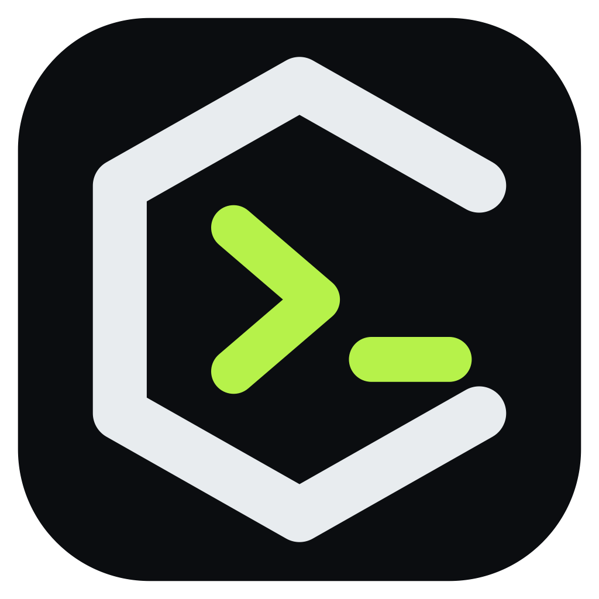
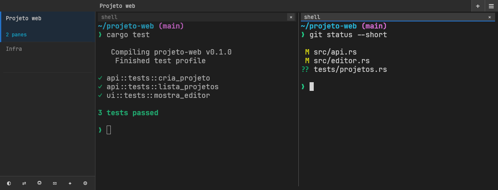

Organize o trabalho por projeto
Agrupe abas, divida a tela e mantenha testes, logs e Git à vista no mesmo terminal.

Terminal de código aberto para macOS, Windows e Linux. Use seu shell em abas verticais, divida a tela e acompanhe seus agentes de código sem sair do terminal.

Agrupe abas, divida a tela e mantenha testes, logs e Git à vista no mesmo terminal.
Marque uma aba como persistente para manter o shell em execução ao fechar a janela.
Abra os hosts do seu arquivo SSH em abas e veja na barra lateral os avisos dos agentes de código.
macOS com Apple Silicon. Abra o DMG assinado e notarizado e arraste o Code Terminal para Aplicativos. Use ⌘V para colar e ⌘C para copiar a seleção.
Windows x64. Execute o instalador .exe da versão 0.1.1. A instalação é por usuário. O arquivo está sem assinatura Authenticode.
O instalador para Linux está em validação.
Notas da versão e verificação do download no GitHub
Criado por Diogo Costa Santos, publicado pela Código Central e licenciado sob a GNU GPL v3 ou posterior.